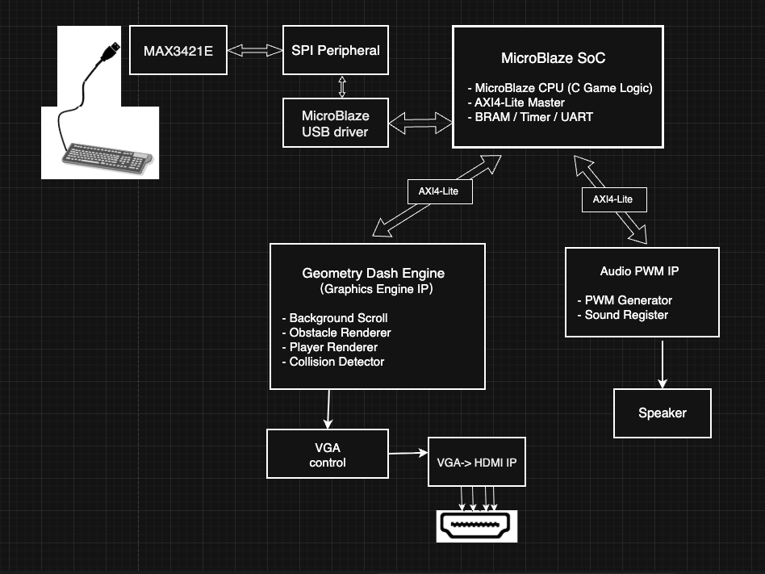

FPGA HDMI Graphics Engine and Game System
Implemented a 640x480 HDMI graphics pipeline in SystemVerilog with tile rendering, sprite compositing, obstacle scrolling, and a MicroBlaze-driven gameplay runtime in C.
Overview
This project explored how to build an interactive graphics system on FPGA hardware under strict real-time video timing constraints. Rather than treating the project as only game logic or only digital design, the work combined a hardware display pipeline with a software runtime running on a soft-core processor.

On the hardware side, the system used SystemVerilog to implement a real-time HDMI graphics pipeline for 640x480 output. The rendering path included tile-based background drawing, sprite overlay, and obstacle scrolling, all coordinated under video timing requirements so that pixels were produced in the correct order at display rate.
On the software side, game logic ran in C on a MicroBlaze soft-core processor. That runtime handled world-state updates, player movement, collision detection, and USB keyboard input, then communicated with custom hardware graphics modules through AXI4-Lite memory-mapped registers. The project was a practical exercise in hardware/software co-design, where visual output, gameplay responsiveness, and register interface design all had to work together as one system.